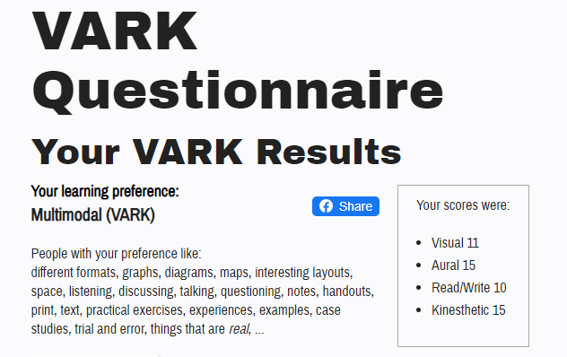

My name is Kevin Zhu and I was born in Australia and I have a Chinese background. I am currently studying information technology at RMIT and have been studying at RMIT since 2014. I originally chose at RMIT because I liked how the university allowed students to dive straight into specialized fields and get practical experience.
My hobbies involve gaming and playing music.
I grew up playing an variety of 2D platformers like Mario, Mega Man, Castlevania, Metroid, IWBTG.
I used to play some League of Legends and Player Unknown Battlegrounds but recently, I have grown an interest in the Monster Hunter series.
I can play the piano and bass, although I am very rusty on the former and still need a lot more time on the latter.
I am currently attempting to program a simple game but have been hitting many walls due to inexperience in many areas.
Learning test result:
It is interesting to see that the test results show that I am a mediator as I have always seen myself as an analyst. I do not think the learning test results affect me in any way as I think each person has their own optimal way of learning and I am no different. I feel that the psychometric test is roughly correct as I am not an outstandingly confident nor ambitious person, but enough to get work done.
When I was deciding what to study last year at RMIT, I had a choice between information technology, industrial design, business management and analytics.
I ended up choosing industrial design, because I felt that my practical skills were weak. It was a good experience for me as I had the opportunity to handcraft objects and use tools in a workshop. Unfortunately, I was only starting my second semester before I dropped out due to the pandemic.
With all the time I had, I started to work with software that was based off the python scripting language, which got me interested in switching to a degree in IT. Furthermore, I was quite confident that IT would have plenty of courses that could be taught online, which would be very important for at least the time being.
My ideal job would:
- have about 20-40 working hours a week.
- not take more than 40 minutes to get to if I were using a car.
- be related to IT in one way or another.
Flexibility is not too much of a concern to me as I am punctual when required. Currently, I am looking for helpdesk or junior engineering jobs as I have little work experience in the field so I am hoping to build a foundation to go further.
Although I am introverted, I have experienced that working in teams or solo each has their good and bad points and I do not particularly prefer one over the other. However, if I am working in a group, or with a customer or client, I prefer to have the option to communicate with them frequently to continuously update with each other and avoid misunderstandings.
Additionally, I would like to be able to gain work experience in the industry to better myself for future projects that I work on in teams or by myself.


This short term project idea is a phone app that monitors cardiovascular and muscle exercise. The aim is to encourage people to keep active, especially during these times when most people (myself included) stay at home and forget to exercise.
When starting a workout, there should be a timer that starts to show the time spent in the session. The cardio exercise mode should take your mass, distance travelled and time taken and shows the approximate calories burnt. The muscle exercise mode should take the number of repetitions and sets you plan to do, with a timer set to the length of the break in between sets.
The app should be convenient to use after the initial setup, requiring only single taps to reset timers. To further improve user convenience, it should be possible to allow a number of presets to be saved by the user. This is to prevent the need to do the initial setup every time and also to allow the user to quickly switch if they prefer to do two different exercises alongside each other.
A drawback I can see with this project is that it would be quite difficult to make the app convenient for everyone, as different people have different methods. Another flaw is that there most certainly already exists an app similar to this idea.
The project idea is a program that gives dynamic information and for garden care.
The idea is to take the general location of the user and use that information to get the weather and climate through the internet. With this information, the program can then show general advice and a list of plants, which the user can select.
The general advice will be common tips such as making sure the soil is not too dry, making sure there are no pests, etc. If the user selects a plant, the program should then show a screen that has information on the selected plant, with advice that varies based on their climate. Additionally, it allow the user to select multiple plants and put them in a group indicating that they are growing them. It should provide daily information on how to tend to them, or a warning if the weather tomorrow may be cause them harm. For example, if the temperature in the next days drop very low, a warning may appear depending on the selected crops to inform the user that their crops may not be safe.
A few drawbacks with this project would be that it is a large amount of work to get all the information on plants as there are far too many that exist. This project requires the user's location, which some people refuse to do. The project also needs to rely on other sources to obtain information on not only the climate of the location, but also on plants, which could be incorrect. If one piece of information is incorrect, it could lead to a chain of misinformation.
Occasionally, I work on programming a game in my own spare time. My aim is to create something that is engaging to the player while also maintaining a difficulty that forces the player to strategize. To avoid too much frustration, grinding should not be a requirement and measures should be taken to prevent players from "falling behind".
Although this is not something I work on often, I am finding it an enjoyable experience in learning the scripting language that the engine uses. I have what I feel is a good plan on the direction I want to take while still keeping the game fun and getting the program to work as I envisioned it to feels like an accomplishment. However, I have found many issues along the way that immensely slows progress down. The biggest issues would be graphics design, music (both of which has not even been started) and plans to link the story and gameplay elements together.
Unfortunately, this would not be a project that I would work on full time, as getting it finished to a stage that would be satisfying to my standards would take far too long.